From zero: install, run, and work on the network
1. Extract the zip. Do not run the program from inside it
Right-click the zip and choose Extract All. Pick a folder, for example the Desktop. You should see PersianLedger.exe inside that folder.
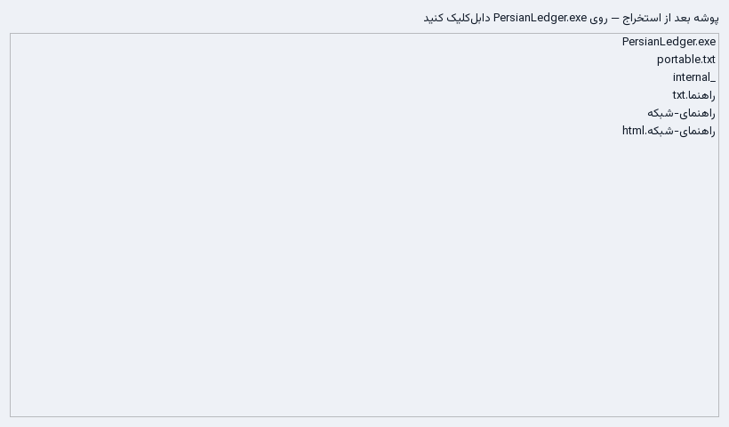
Double-click PersianLedger.exe. If Windows shows "Windows protected your PC", choose More info, then Run anyway. That message is the missing commercial signature, not a virus.
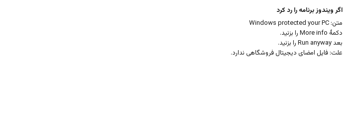
2. First sign-in
The first launch asks you to create a manager account. Write the username and password down.
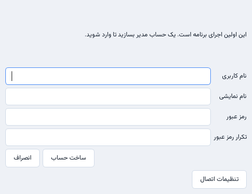
3. One person, if you do not want a network
Nothing else is required. The program creates the ledger in the data folder next to the executable. The status bar shows the path. Take backups from Settings.
If only one person uses the books, stop here. The rest of this guide is several users on the office network.
4. Which computer is the server?
The computer that stays on. Usually the accountant's machine, or a small desktop. It must be on the office Wi-Fi or a cable, not only on a phone hotspot. PostgreSQL is installed on that one machine. Everyone else opens the program and types this machine's address.
5. This computer's address on the office network
On the server, open Start, type cmd, and press Enter. In the window type ipconfig and press Enter. Under Wi-Fi or Ethernet, find IPv4. It usually starts with 192.168.
If a VPN is on you also see an address starting with 10.. Do not use that one. The office address is the internal Wi-Fi address. On the machine where these screenshots were taken it was 192.168.1.114.
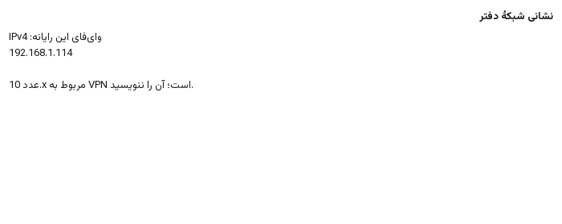
6. Install PostgreSQL on the server
- Search for the PostgreSQL 16 Windows installer from EDB.
- Click Next through the installer. Write down the
postgresuser's password. - Leave the port at 5432.
- You can skip Stack Builder.
- Open pgAdmin. Right-click the server and open the query tool. Run
deploy/postgres/init_db.sqlfrom this package. Change the password of thepersianledgerrole to a real password.
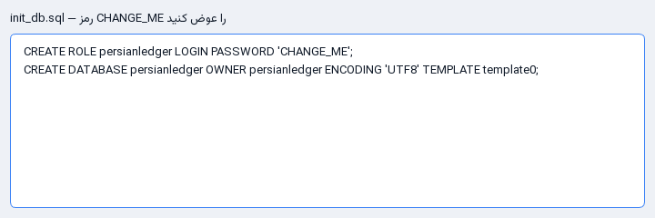
In the PostgreSQL data folder, open postgresql.conf in Notepad. Set listen_addresses so the server accepts connections from the office network. Open pg_hba.conf and add a line for your office subnet, for example 192.168.0.0/16. Restart the PostgreSQL service from Windows Services.
7. Open the firewall port
Windows blocks incoming connections by default. Allow port 5432 for the office.
The simpler way: find deploy/postgres/setup_office_server.ps1, right-click it, and choose Run with PowerShell. If Windows blocks that, open PowerShell as Administrator and run the same file. It opens the port on the private network and prints the address.
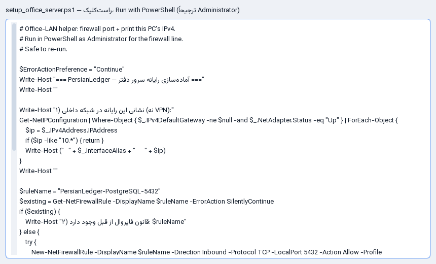
The manual way is Windows Defender Firewall, Advanced settings, Inbound Rules, New Rule, Port, TCP 5432, allow the connection, Private profile, and a name you will recognize.
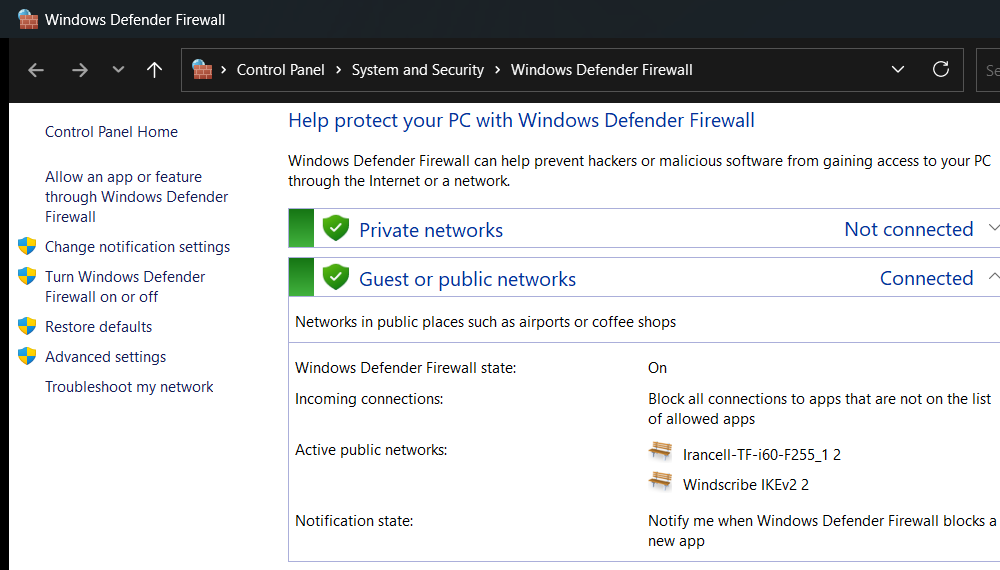
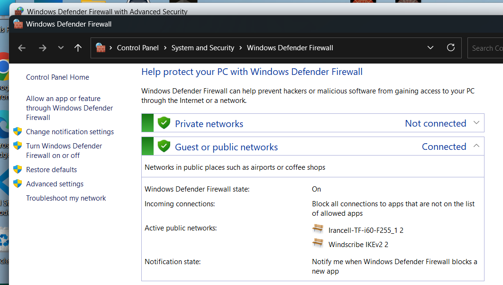
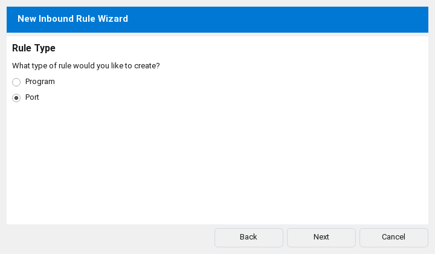
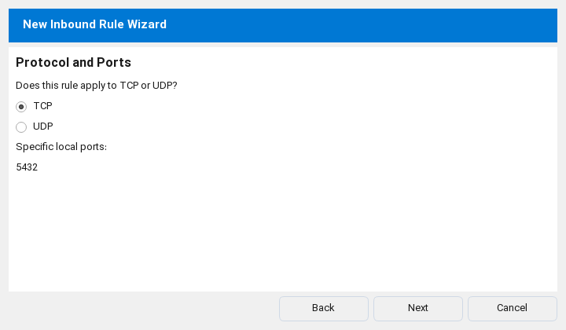
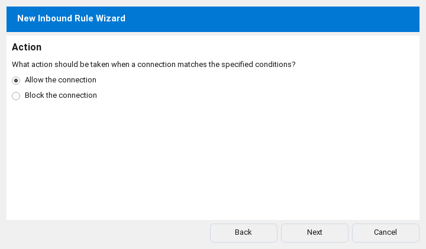
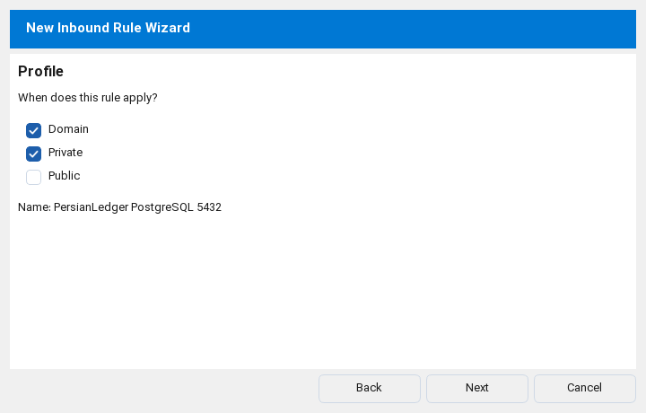
If a client cannot connect, tick Public on the same rule, or set the network to Private in Windows Settings.
8. On each user's computer
Copy the extracted folder. The client does not need PostgreSQL. Open the program and open connection settings from the sign-in window, or from currencies and the fiscal year. Choose the network server.
The address is the server IPv4. Port 5432. The database name and user are persianledger. The password is the one you set in SQL. Test the connection. If it succeeds, save, close the program, and open it again.
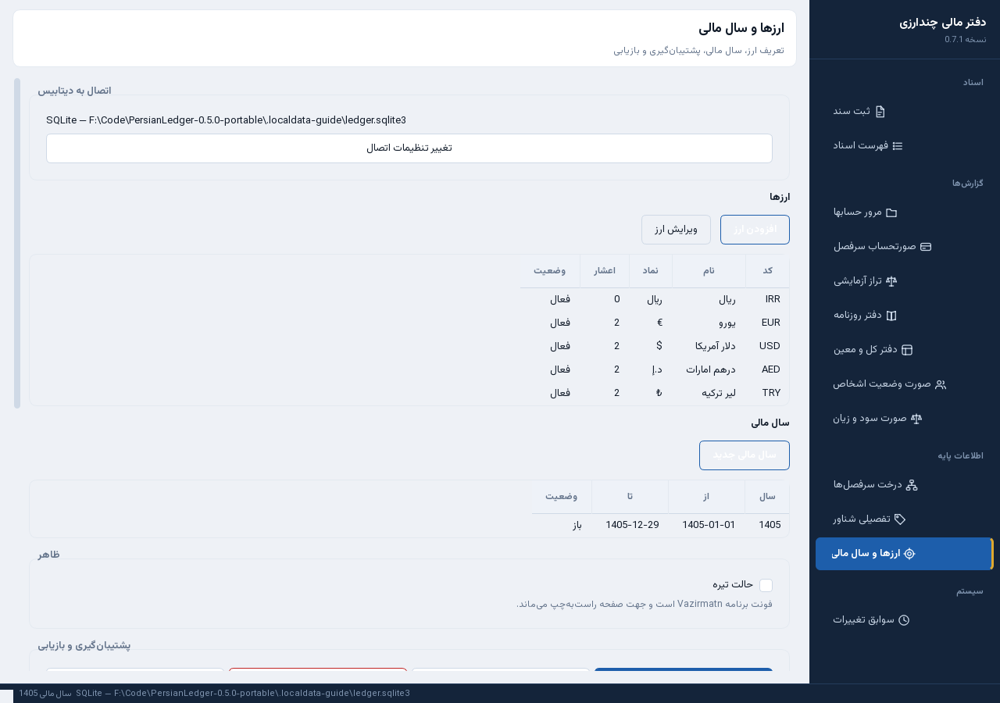
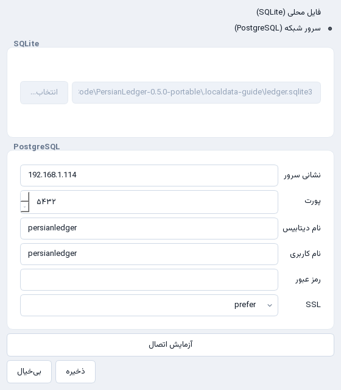
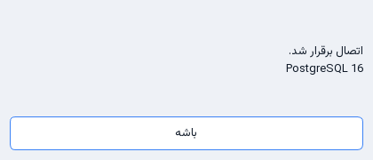
9. Move the current ledger to the server
If you have been working on the local file, on the server computer, still on SQLite, sign in as manager. Open Settings, then move the current database to PostgreSQL. Enter the server address. After it succeeds, save the connection as the server.
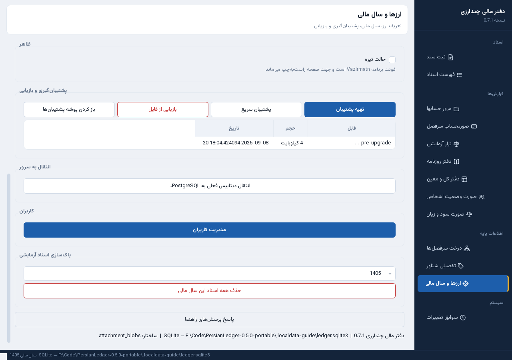
10. Backup and restore
On a local file, a backup is a sqlite3 file. On the network, the backup is created on the server. A copy on a shared folder is an archive, not the daily working copy.

11. Account browse and dates
If the range is today to today and you still see earlier movement, clear "Show the balance from before the range". That checkbox puts the old balance in the opening column.
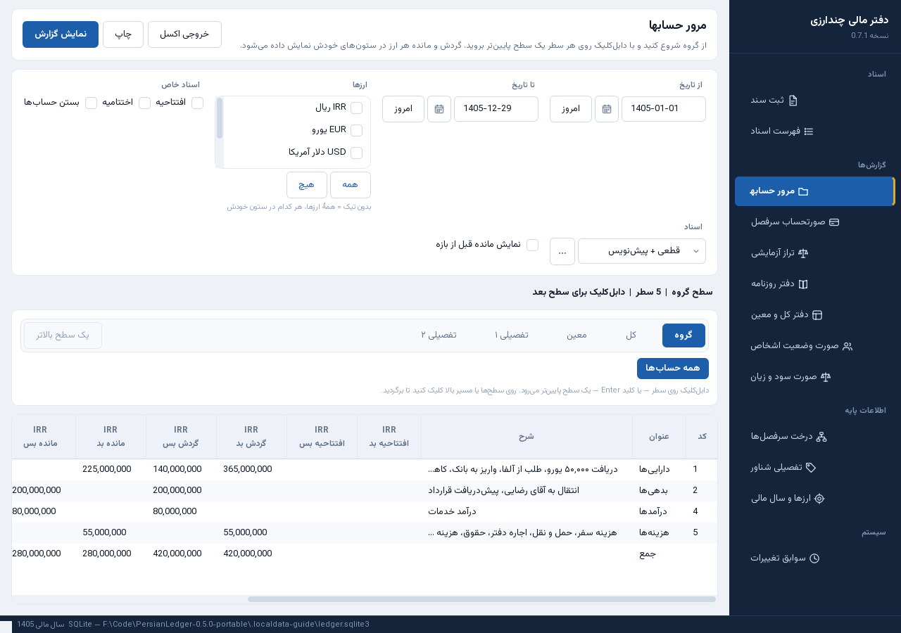
12. Chart of accounts
The tree opens down to the subsidiary by default. Details open when you click a subsidiary. The group name is shown, not only "detail 1".
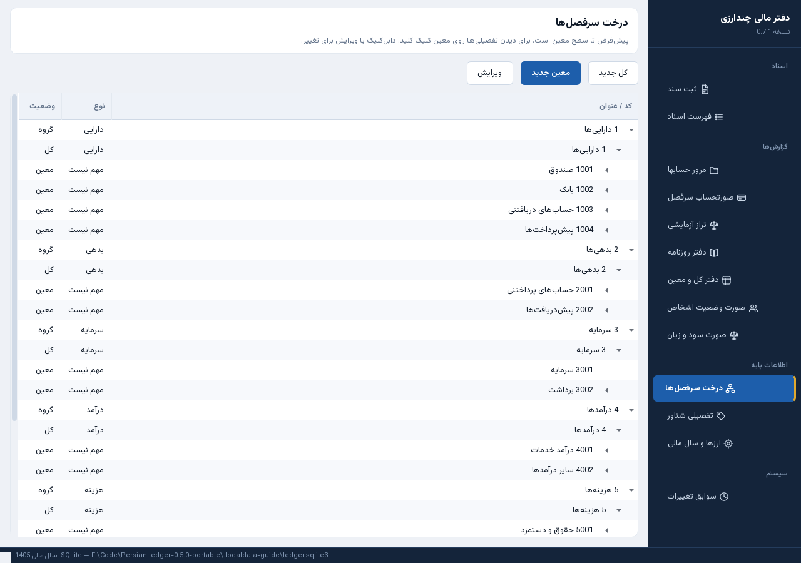
If it does not connect
- Is PostgreSQL running on the server? Check Services.
- Is the IP the Wi-Fi address, not the VPN address?
- Is there a firewall rule for 5432? If the network is Public, also tick Public.
- Were
listen_addressesandpg_hba.confsaved, and was the service restarted? - Is the SQL password the same one typed in the program?
The status bar shows whether the program is on SQLite or on PostgreSQL.